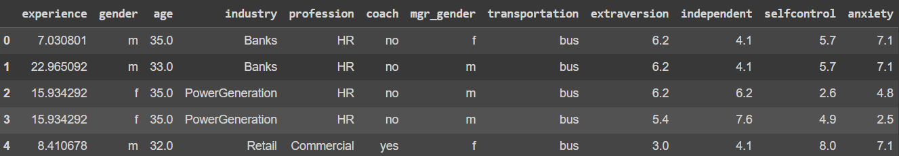
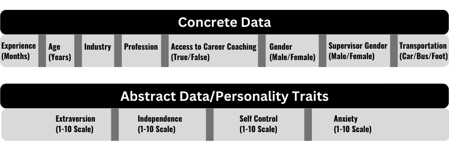
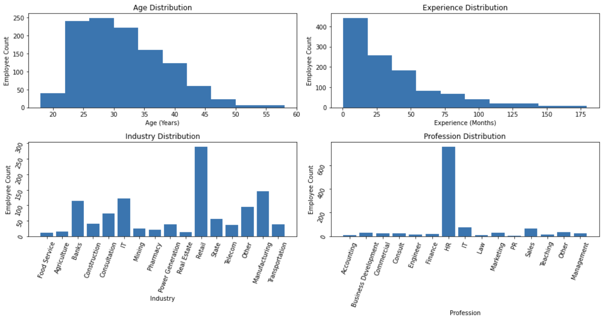
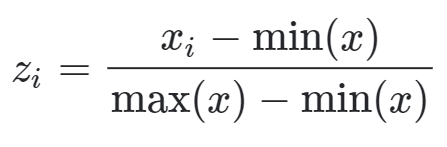
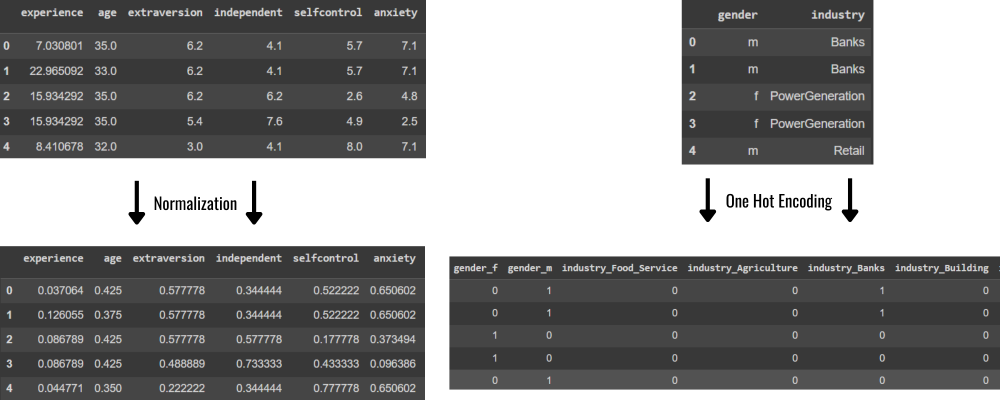
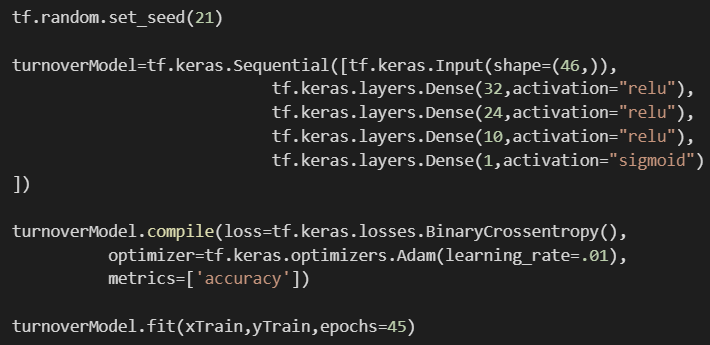
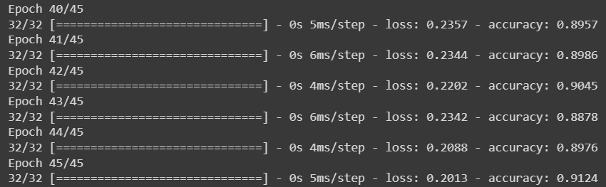
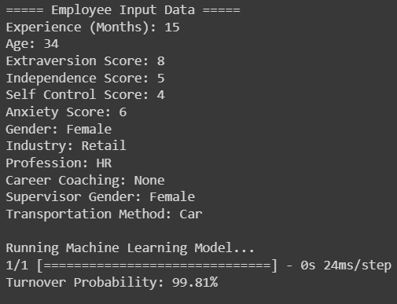

Using AI to Predict Employee Turnover + Layoff Data Analysis
Project Introduction and Data Analysis
The goal of this project is to use an employee's information, including industry, occupation, experience, and other factors to determine whether or not they will be laid off from their position. The available dataset for this problem contains 1129 samples of employees as well as whether or not each were laid off. Each data entry has 12 features, which are things that describe that particular employee. Some of the features are numerical such as experience & age, while others are categorical such as which industry they work in, their gender, and their profession. A sample of 5 data points are shown below:
Data Analysis
First we look at all the features that are given for each employee in the dataset:
We see that each employee is described by objective information about them such as age, experience, gender etc, but they are also described by several self reported ratings on a scale of 1-10 regarding different personality traits.
Now we see that we know more about the data we can analyze the dataset, starting with analyzing the categorical feature distributions. First, I plotted the distributions across each of the concrete data variables.
As seen above, the age and experience of the employees in this dataset is skewed right, with most employees being under 32 years old and with less than 4 years experience. This makes the dataset not ideal, because according to the BLS the median age of the US workforce in 2021 was about 41 years. However, this age range does see significant representation in our dataset so we can safely continue.
In analyzing the industry and profession distributions we see that the Retail Industry and HR Profession are also largely overrepresented in this dataset. Given this result, we now know that young employees in the Retail industry and/or the HR profession are the optimal audience to use the machine learning model on.
Moving forward, I now plot the distributions of the abstract data features.
These distributions are all approximately normal, as one could expect. However, because these data are self-reported and purely abstract, the integrity of this data is highly questionable. Employees can report whatever scores they want, even when they know the score is opposite to their personality. In practice, I'd encourage the production of two models with one model not using these abstract data as it would be more reliable and scalable.
Data Augmentation
We need to numerically encode each data entry's features for the machine learning model to work, but the methods to achieve that depend on the type of feature. First, we have to separate the numerical features from the categorical features. I started by processing the numerical features with a renormalization transformation. This transformation remaps the distributions of each numerical variable from their original values to numbers between 0 and 1. For example, if employee experience ranged between 1 and 98 months, the transform would change that distribution to fit a 0 to 1 month interval while preserving the variance of the original dataset. I do this by applying the following formula across each data sample:
This is all the computational processing needed for the numerical features, so we now turn to the categorical features. For this model, we see that categorical features (including gender, industry, profession, etc) are represented by words in the dataset. To encode those words into numbers, I applied a one hot representation of each category. This means that we add all possible industries/professions/etc to a given employees record, and put a 1 if that employee was in that industry/profession/etc and a 0 if they were not. This will increase the dimensionality of the model, but the model will be small so this compromise is acceptable. These transformations result in the data changing as shown below:
Making the Machine Learning Model
Now that the data is all numerically encoded, we can create train and test batches of the dataset. I used SciKitLearn to partition 80% of the 1129 samples for training the model, and the remaining 20% for testing the model. Finally we can prepare the deep learning model, in this case using TensorFlow. I created a 5 layer linear model with the ReLU activation functions on each output except the final layer. We use the Adam optimizer and a Binary Cross Entropy loss because we only want the model to predict if they employee will get laid off or not. The model architecture in Python code is shown below as well as verification of the model reaching 90% accuracy through 45 training epochs.
 Now that we see that the model is performing well, we can create an application for a user to make a prediction on an employee the model hasn't seen before. Because of the final Sigmoid activation function, the model outputs a probability between 0 and 1 which can be seen as the models confidence. In the dataset, the number 1 indicates a lay off and 0 indicates no lay off. Thus, in the final product we round the models output probability to get either a 0 for no lay off or 1 for a lay off and display the models confidence back to the user. To end this post, I show the model making a turnover prediction given a 34 year old Female working in the Retail Industry as an HR rep:
Technologies Used:
- Python
- Pandas
- TensorFlow
- Numpy
- SciKitLearn